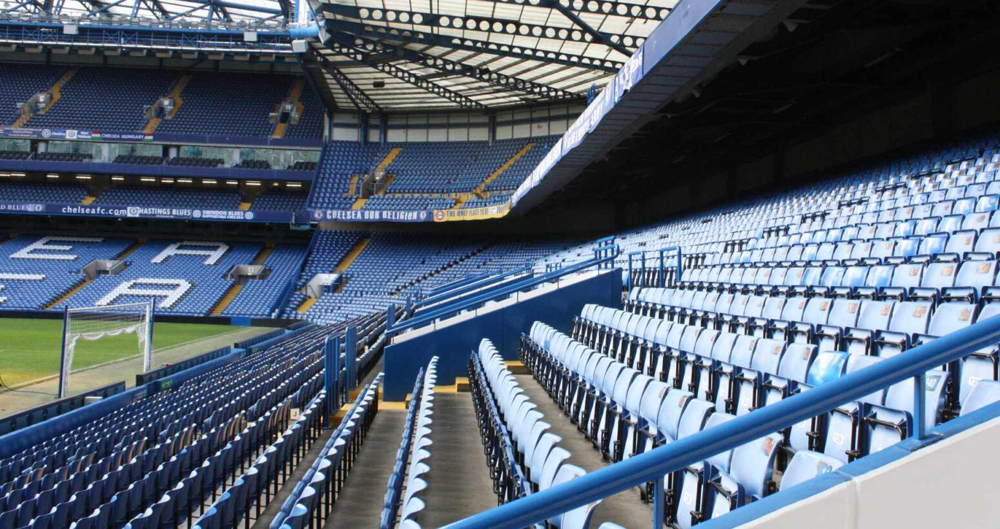
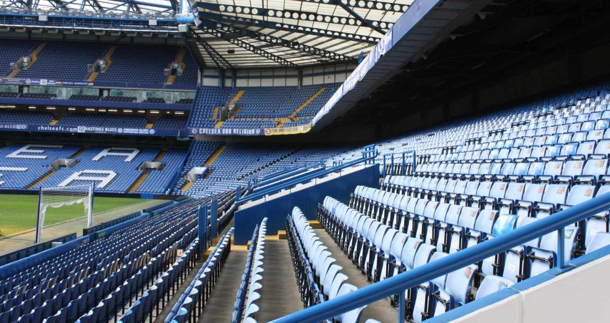
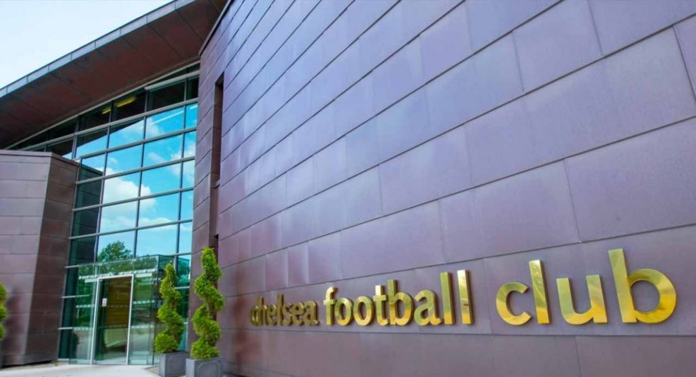
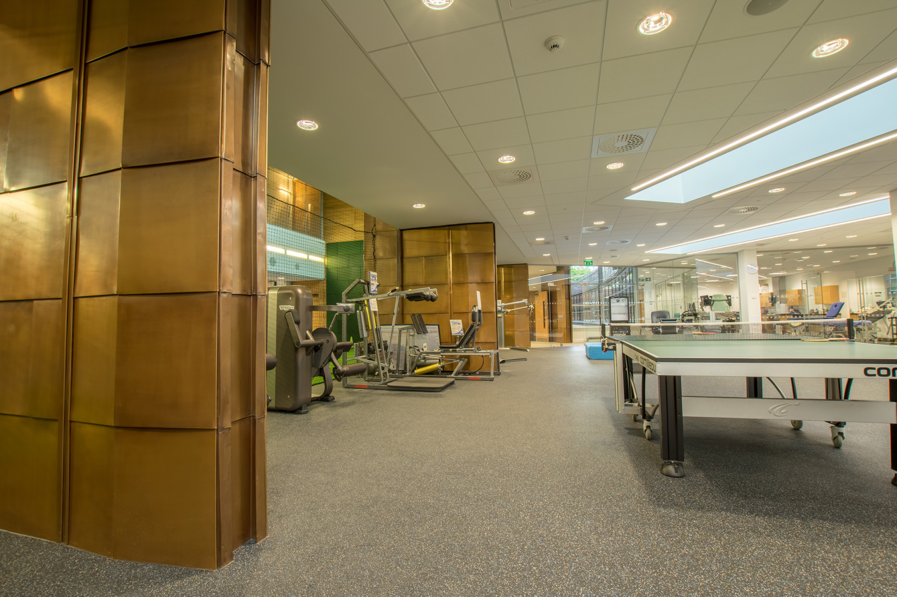
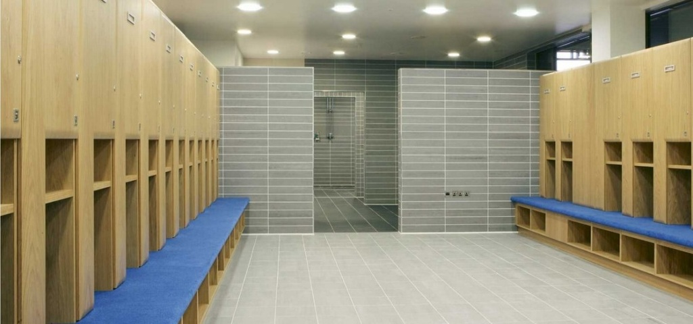
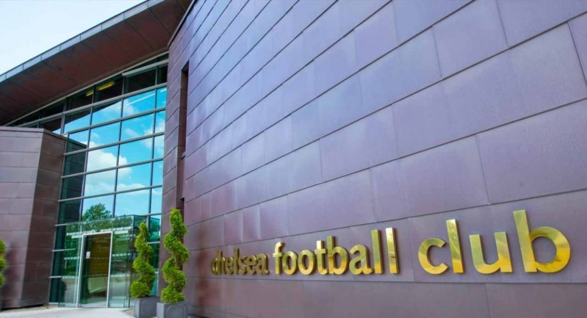
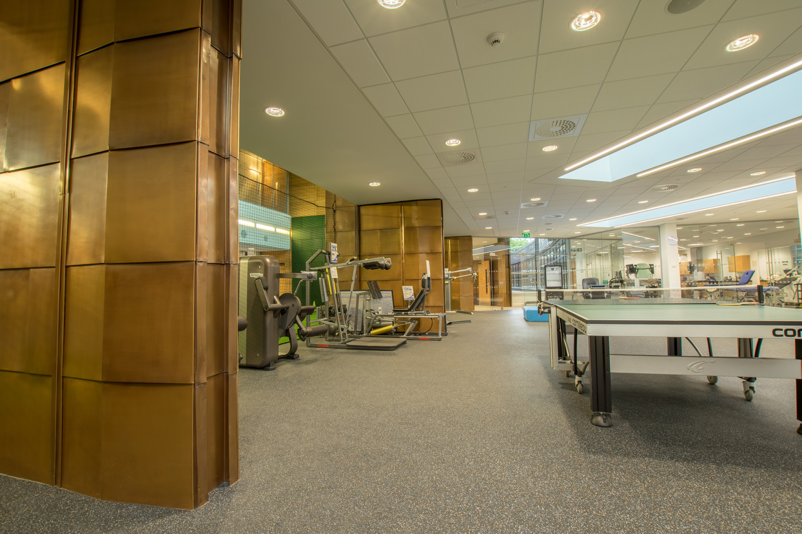
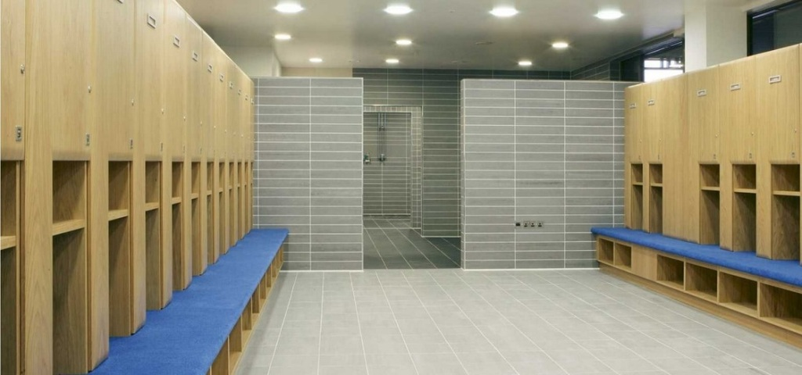

ที่อยู่ : Stamford Bridge, Fulham Road, London, SW6 1HS
ชื่อเล่นของสโมสร : เดอะบลูส์
ก่อตั้งเมื่อ : ปี 1905
ความจุของสนาม : 41,629 คน
ขนาดของสนาม : 103 x 67 เมตร
สนามซ้อม
สนามซ้อมของสโมสรตั้งอยู่ที่ค็อบแฮม ในเซอร์รีย์ แต่ในการฝึกซ้อมจะไม่อนุญาติให้บุคคลทั่วไปเข้าชม แต่จะมีวันพิเศษที่จะจัดขึ้นที่สแตมฟอร์ด บริดจ์ โดยแฟนๆ สามารถเข้าชมการฝึกซ้อมของทีมได้ในวันนั้นๆ
โครงการสนามใหม่
อนาคตสโมสรได้เสนอยื่นเรื่องขอซื้อที่ดินบริเวณโรงไฟฟ้าเก่าแบทเทอร์ซี ที่มีพื้นที่ขนาด 39 เอเคอร์ ย่านชานกรุงลอนดอน เพื่อเดินหน้าโครงการก่อสร้างสนามเหย่าแห่งใหม่ โดยจะมาปรับแต่งให้กลายเป็นสังเวียนแข้งขนาดใหญ่รองรับแฟนบอลได้กว่า 60,000 ที่นั่ง
 





ที่อยู่ : Chelsea FC Training Ground, 62 Stoke Road, Cobham, Surrey, KT11 3PT
ก่อตั้ง : ปี 2005
พื้นที่ : 140 เอเคอร์ หรือ 354.2 ไร่
มีสนามฟุตบอล : 17 สนาม
สนามซ้อมคอปแฮม
ห่างจากกรุงลอนดอน 27 กิโลเมตรเป็นสนามซ้อมที่ดีที่สุด ที่เจ้าของทีมเชลซีทุ่มงบกว่า 20 ล้านปอนด์หรือ 879 ล้านบาทในสร้างสนามซ้อมให้ทันสมัย ล้ำเทียบเท่าสนามซ้อมของทีมใหญ่ๆ อย่างแมนยูเชสเตอร์ยูไนเต็ด บาเซโลน่า หรืออาร์เซน่อล ซึ่งทำให้คอปแฮมติดอันดับ 1 ใน 10 สนามซ้อมที่ดีที่สุดในโลก